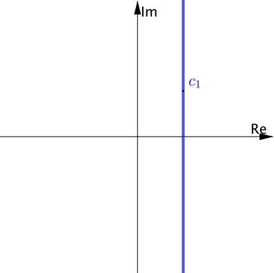
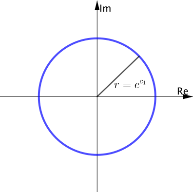
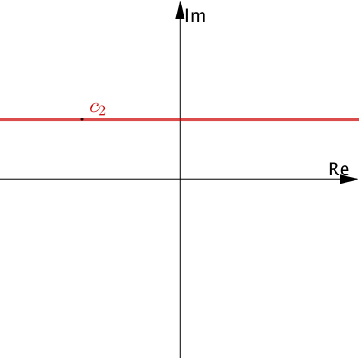
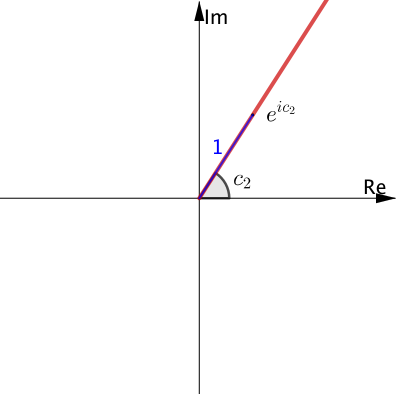
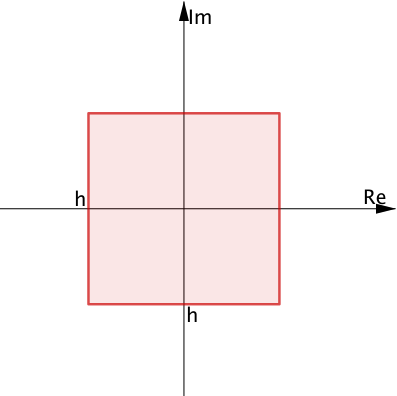
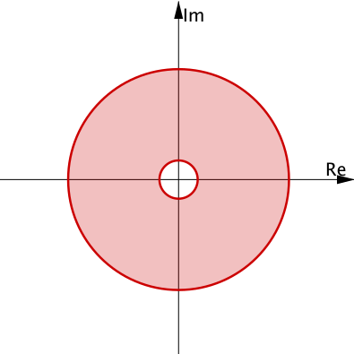

MATH3401
Complex Analysis
Lecture 8
Inverse of \(\exp\)
Too much to ask to hope for "\(=\log = \log_e\)", due to \(\exp\) being periodic (period \(2\pi i\)) in \(\C\).
Inverse of \(\exp\)
Note that \(e^w=z\). Write \(z = r e^{i \Theta}\), with \(r> 0\) and \(\Theta = \Arg(z) \in (-\pi, \pi]\).
Write \(w= u+iv\). Then \(z = e^{w} = e^{u+iv} = e^u e^{iv} \).
This implies \[ \left\{ \begin{align*} e^u &= r \\ v &= \Theta + 2 k \pi ,\; k\in \Z \end{align*} \right. \]
Inverse of \(\exp\)
So \(\mu = \ln r\) meaning logarithm ot the base \(e\) of the positive real number \(r\).
Thus \[ \begin{align*} w &= u + i v \\ &= \ln r + i \left(\Theta + 2 k \pi \right)\; k \in \Z\\ &= \ln |z| + i \,\arg(z) \end{align*} \]
Exponential map
\(z \mapsto e^z = \exp(z)=w\), with dom\((w)=\C\).
For \(z=x+iy\) with \(x,y\in R\),
\(w= e^z=e^{x+iy}=e^xe^{iy}\)
\(\quad = e^x\left( \cos y + i \sin y \right) = u+iv \)
where \(u=e^x\cos y, v=e^x\sin y\).
Exponential map
Write \(w=\rho e^{i\phi}\), where: \[ \left\{ \begin{array}{rl} \rho &= e^{x} \\ \phi &= y + 2 k \pi, \; k\in \Z \end{array} \right. \]
Images under \(\exp\)
Vertical line \(x=c_1\).
|  |
\(\tiny\exp\) \(\ra\) |
 |
|---|
Images under \(\exp\)
Vertical line \(x=c_2\).
|  |
\(\tiny\exp\) \(\ra\) |
 |
|---|
Images under \(\exp\)
How about:
|  |
\(\tiny\exp\) \(\ra\) \(\tiny h < 2\pi\) |

|
|---|
Images under \(\exp\)
How about:
|
\(\tiny\exp\) \(\ra\) \(\tiny h \geq 2\pi\) |
 |
|---|
Properties of \(\exp\)
Many "laws" for \(\R-\exp\) extend to \(\C-\exp\):
- \(e^0=1\);
- \(e^{-z}=1/e^{z};\)
- \(e^{z_1+z_2}= e^{z_1}e^{z_2};\)
- \(e^{z_1-z_2}= e^{z_1}/e^{z_2};\)
- \(\left(e^{z_1}\right)^{z_2}= e^{z_1z_2}\).
Properties of \(\exp\)
Somethings do not extend:
- \(e^x > 0\) for all \(x\in \R\), but e.g. \(e^{i\pi}=-1\) and \(e^{i\pi/4}\in\C\setminus \R\);
- \(x \mapsto e^x\) is monotone increasing on \(R\) but \(z\mapsto e^z\) is periodic. with period \(2\pi i\): \[ \begin{array}{rl} e^{z+2\pi i} &= e^{z}e^{2\pi i} \\ &= e^z\left( \cos 2\pi + i \sin 2 \pi \right)\\ &= e^z. \end{array} \]
Note: as in \(\R\), \(e^z=0\) has no solution in \(\C\). If exists \(z=x+iy\) such that \(e^z=0\), then \(e^xe^{iy} = 0 \implies e^x=0\). Contradiction!
Inverses
\(f:\Omega \ra \C\). Then \(g : \text{Range}(f) \ra \Omega\) is an inverse of \(f\) says that
\( f\circ g: \Omega \ra \Omega \) is the identity,
i.e. \(\left(g \circ f \right)(z) = z\) for every \(z\in \Omega\).
E.g. \(z\mapsto z+1\), \(z\mapsto z-1\) are inverses \(\C\ra \C\); \(z\mapsto 1/z\) is its own inverse, \(\C_*\ra \C_*\)?
Inverse of \(\exp\)?
Credits
Lecture notes
Joseph Grotowski
Design, Images & Applets
Juan
Carlos Ponce
Campuzano
Go to next Lecture